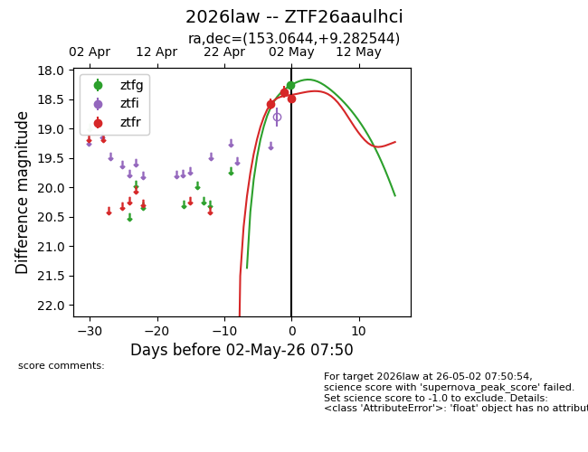
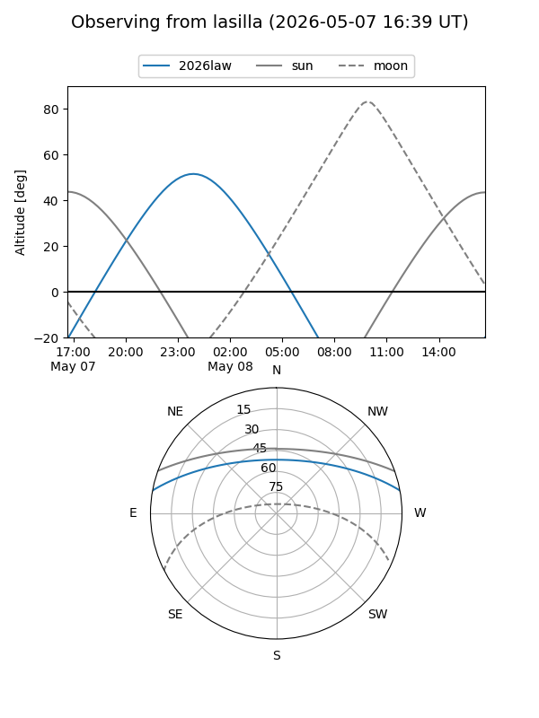
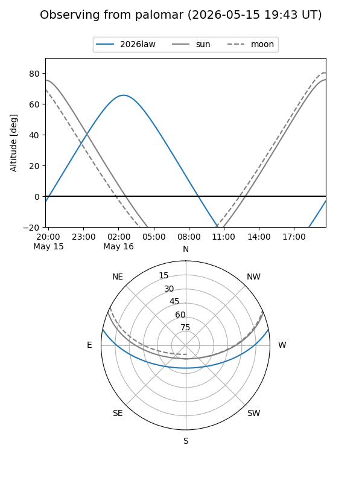
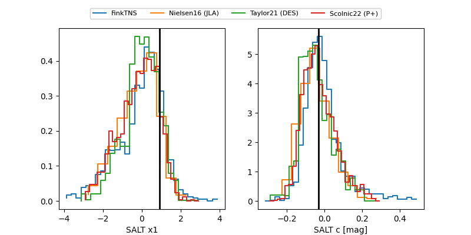

2026law
Target 2026law at 2026-05-02 08:01
Aliases and brokers:
FINK: link
Lasair: link
ALeRCE: link
TNS: link
YSE: link
alt names
ZTF26aaulhci (ztf,fink_ztf)
2026law (tns,yse)
Coordinates:
equatorial (ra, dec) = 153.0644,+9.28254
equatorial (HMS+DMS) = 10:12:15.45,+09:16:57.16
galactic (l, b) = (230.6825,+48.45274)
Flags:
Photometry:
last ztfg=18.27, ztfr=18.49
1 ztfg, 3 ztfr detections
Lightcurve

Visibility


Additional plots
